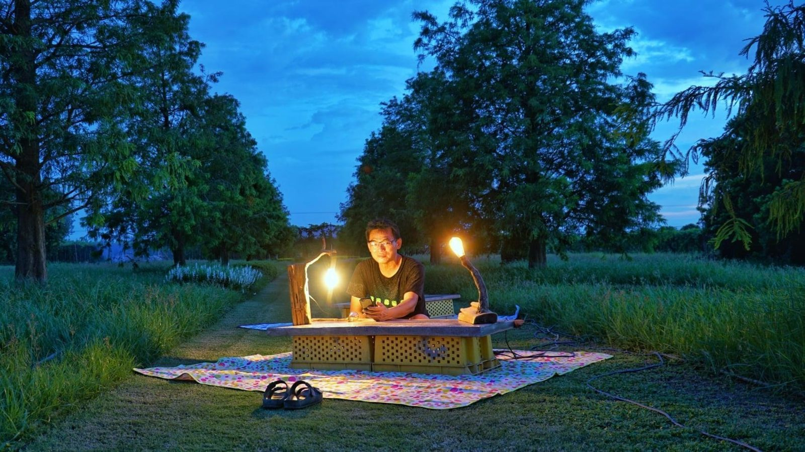
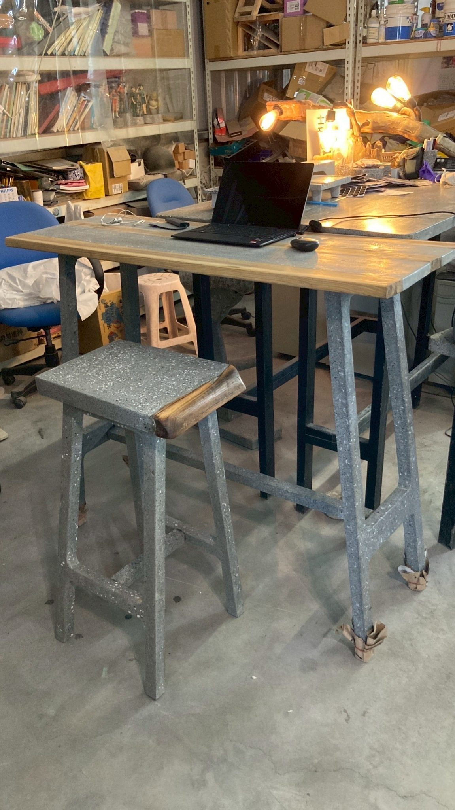

屏東旭海的沙灘上，一張水泥桌、一壺茶、幾個不期而遇的旅人。這不是展覽，是 Concredia.Lab 最真實的品牌宣言。
那天早上五點，Rovi 老師的車後座裝著一張 70 公斤的水泥桌。從工作室到旭海，四個半小時的車程。這條路，我們叫它「寂寞公路」——不是因為孤獨，而是因為你必須先願意孤獨，才能抵達那種真實的相遇。
旭海是台灣最東南角的小村，手機訊號時有時無。我們把桌子搬到海邊，擺上茶具，泡了一壺茶，然後坐著等待。
因為 70 公斤是無法假裝的重量。它不會輕易被搬走，不會因為場合不對就收起來。它在哪裡，那個對話就在哪裡。
水泥的本質是定錨。當你把一張水泥桌放在沙灘上，它就成為了那個地方的一部分——不是訪客，而是見證者。
第一個坐下來的，是一個騎摩托車環島的年輕人。他問：「這桌子是石頭做的嗎？」我們說是廢料。他沉默了一下，說：「廢料可以這麼美。」
第二個是帶著小孩的媽媽。孩子摸了摸桌面，說：「好粗。」媽媽說：「那是它的故事。」我們後來才知道，她是一位建築師。
第三個不是人。是一隻流浪貓，在桌腳蜷縮睡著了。我們決定不打擾它，收桌子的時間推遲了兩個小時。

「寂寞公路計劃」不是一個行銷活動，它是一個持續進行中的提問：當水泥遇見山、遇見海、遇見陌生人，它說什麼？
我們計劃每隔一段時間，帶著作品前往台灣的不同地景——山谷、廢墟、市場、海邊——製造一次不期而遇的對話機會。每一次，我們都會記錄下來。
不是因為要讓更多人知道 Concredia.Lab，而是因為這些對話提醒我們：廢料的終點，是讓人坐下來喝茶。